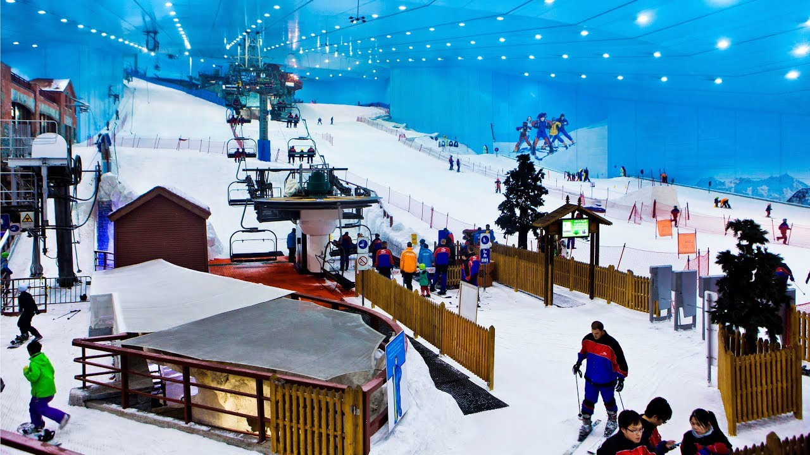
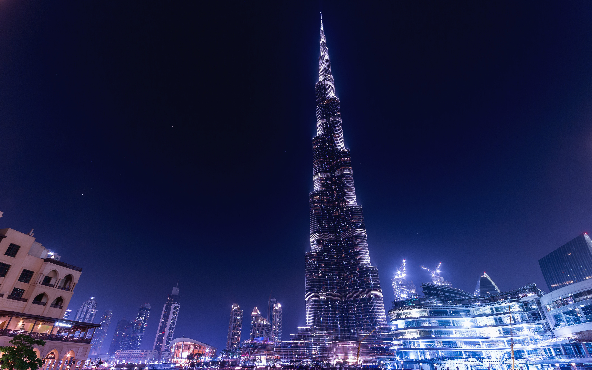
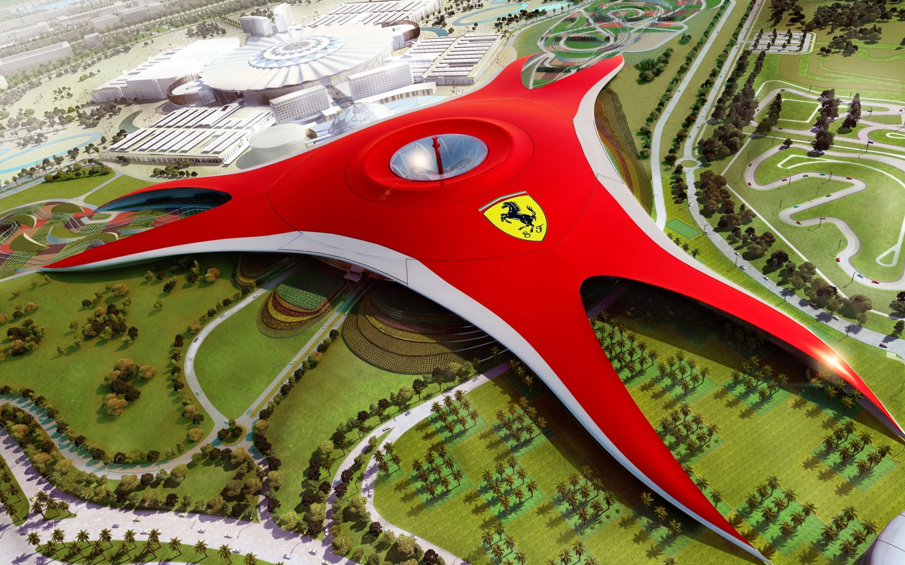

Hello Dubai!

Dubai (دبي) is one of the seven emirates that make up the United Arab Emirates. It is rather like an independent city-state and is the most modern and progressive emirate in the UAE, developing at an unbelievable pace in the tourist and trade sectors especially. Recently Dubai won the bid to host EXPO 2020, a Universal scale Registered Exposition approved by the Bureau of International Expositions (BIE), Paris.
Relatively new tourist destination, Dubai was gaining popularity in recent years until the global economic crash of 2008. Dubai is essentially a desert city with superb infrastructure, liberal policies (by regional standards), that became popular for its excellent tourist amenities. Just 5 h from Europe and 3 h from most parts of the Middle East, the Near East, and the subcontinent of India, Dubai makes a great short break for shopping, partying, sunbathing, fine dining, sporting events, and even a few sinful pleasures. It is a city of superlatives: for the fastest, biggest, tallest, largest and highest, Dubai is the destination. It has the largest immigrant population in the world. The weekly day off is on Friday. Note that, since September 2006, a harmonised weekend of Friday and Saturday has been adopted for the public sector and schools. Government departments, multinational companies, and most schools and universities are now off on Friday and Saturday (after years of a mixed bag of Friday/Saturday and Thursday/Friday weekends). Some local companies still work half a day on Thursday with a full day on Saturday, but larger companies tend to permit relaxation and time off work for their employees on Friday
Climate
Dubai has an arid sub-tropical climate with very hot, humid summer weather averaging 42 degrees (108F) in the daytime and 28 (84F) at night. Fall and Spring is still rather hot, with daytime temperatures between 25 and 40 degrees (75-100F) and nights around 20 degrees (65-75F), with less humidity. Winter weather is pleasant and dry, with daytime highs of 25 (75F) and nighttime lows of 10 degrees (55F). Dubai is known for its beaches, with water temperature in summer getting as hot as 37 degrees (99F). The water temperature tends to be around 20-25 degrees (75F) in winter, and 30 (85F) in spring and fall as outside temperatures rise.
Get in by Plane
Dubai's main airport is the Dubai International Airport. You can also enter Dubai by using Sharjah International Airport (SHJ) in the nearby emirate of Sharjah and Abu Dhabi International Airport (AUH) in nearby Abu Dhabi. Frequent visitors from countries granted automatic visa on entry may wish to purchase an e-gate card to speed up immigration formalities and save passport pages. The e-gate card office is situated in the upstairs foodcourt area of the terminal 1 departures concourse. The card will cost AED 200. Note: If you intend to buy an e-gate card in Dubai, you must have entered UAE via Dubai airport. Now it is possible for indians holding green card or valid us visa and passport validity no less then six months can get visa on arrival fo DM.100/-effective may 1st 2017.
Dubai International Airport Dubai Airport Terminal 1 Interiors Shops at Dubai Airport Dubai International Airport (IATA: DXB) [] is the largest hub in the Middle East and the home base of Dubai's flag carrier Emirates [] and its low-cost wing FlyDubai []. In fact, it has grown at such a furious pace that the present terminals are bursting at the seams, especially during the peak hours around midnight. The Dubai International Airport has three terminals and another one in the making as of end 2010. Terminal 1 is the main terminal, used by most major airlines and long-haul flights. Terminal 2 serves regional and low-cost flights, including all FlyDubai flights. Terminal 3 is used exclusively by Emirates. Terminals 1 and 3 are directly connected to each other via the airside (no immigration needed for transfer), while Terminal 2 is located at the other end of the airport. Terminals 1 and 3 are models of modern airport design, but Terminal 2, despite the recent renovations, is still reminiscent of developing world airports, with long check-in lines, queue-jumping and every other passenger checking in 50 kg of luggage. Shuttle buses run between Terminals 1 and 3 every 20-30 min. Terminal 2 is not connected by shuttle so a 30 min taxi ride may be your only option. A low-cost option for traveling to Terminal 2 is to catch the metro to a nearby station, such as the Stadium or Airport Free Zone metro stations, and from there catch a taxi to Terminal 2 (should cost around 15 AED).
Taxi: Most visitors will opt for public taxis from the airport, which are readily available just outside arrivals, which use the meter and start at Dhs 25. Taxis are on the left when you come out of terminal 1. Public transport: Terminals 1 and 3 are served by the Dubai Metro. There are also buses just steps from the baggage claim, the most useful for visitors being lines 401 and 402 (Dhs 3), which go to the Al Sabkha and Al Ghubaiba bus terminals respectively.
Shopping
Gold Souk— Not a mall, but a historic market that has been a part of Dubai since the origin of Dubai itself. Located at the mouth of the creek, it dazzles people by selling gold in large quantities and with little visible security. A must visit for shoppers and sightseers. Most of the gold is 22ct quality and quite expensive - although even here the shopkeepers are prepared to bargain - and the craftsmanship can be remarkably detailed. The gold items are sold by weight with a "making charge" added on top to cover the workmanship. It pays therefore, to go shopping armed with the current gold price and a knowledge of the making charges in order to hone the bargaining process. Many outlets are part of chains that also have branches in malls, so are generally reliable. Spice Souk— As above, not a mall, but a historic market that has been a part of Dubai since the origin of Dubai itself. Located at the mouth of the creek, it is not far from the Gold Souk, but has sadly declined a bit in recent years as supermarkets take over the spice trade. If you're actually shopping for spices, odds are you'll get better prices and quality with much less hassle at Carrefour. Both the Spice Souk and the Gold Souq are a rather hot and sweaty experience with limited air-conditioning, so wear appropriately cool, loose clothing if visiting in mid summer. Malls Mall of the Emirates Burj Khalifa The Dubai Mall. Sun-Wed: 10:00-20:00, Thu-Sat: 10:00-00:00. is Dubai's Largest Mall, which was opened in November 2008. It has over 1200 shops of brand names from all over the world. It is currently the largest mall in the world. Contains an indoor ice rink and indoor aquarium. It is right next door to the Burj Khalifah, the world's tallest building, and the visitors' entrance to the Burj Khalifah is located at the lower ground floor of the Mall. edit Mercato, Jumeirah Beach Rd, (management@mercatotowncentre.com), [4]. Mercato, which is Italian for Market, is the only Renaissance-themed shopping mall in the Middle East. It captures Italian, French and Spanish flavors and artistic characteristics playing host to regular fairs and festivals from each country. M Town Centre Jumeirah, Jumeirah Beach Rd, ☎ +971 04 3440111, [5]. With a bright, open, and spacious atmosphere, Town Centre Jumeirah is a place to shop, relax and casually dine at a wide selection of eateries like Sumo Sushi, Cafe Ceramique, La Cafette by Carpe Diem and Simply Healthy. The centre also houses an extensive range of ladies' beauty outlets like the Nail Station, Paris Gallery, Kaya Skin Care Clinic, Wax Lounge and SOS Salon. edit Mall of the Emirates, near 4th interchange on Sheikh Zayed Road [87], Outside Ramadan: Sun-Wed 10AM-10:00PM; Thu-Sat 10AM-12PM (midnight); Ramadan: Sun-Sat: 10AM-1AM. It was largest shopping mall outside of North America, until the Dubai Mall opened in 2008. 200+ shops, cinemas, plus the Ski Centre. Has many international high street chains as well as luxury brand stores, including Harvey Nichols. Many restaurants and cafes, though cafes tend to be much more crowded than at other malls. It's attached to a Kempinski hotel, which has restaurants licensed to serve alcohol that are accessible from the mall. Very large Carrefour hypermarket attached, next to the Kempinski Hotel. Arabian/Middle Eastern souvenir shops upstairs.
Tourist Places
Ski Dubai
Burj Khalifa
Ferrari World
Burj AL Arab